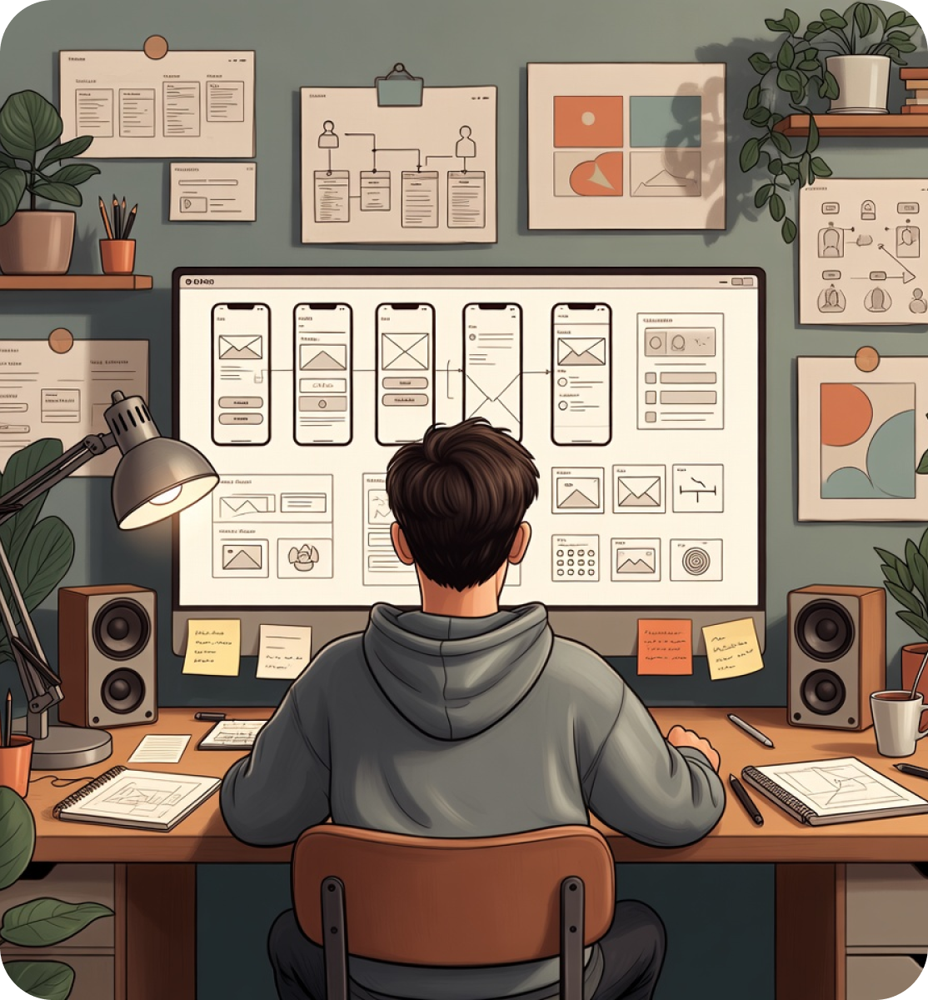
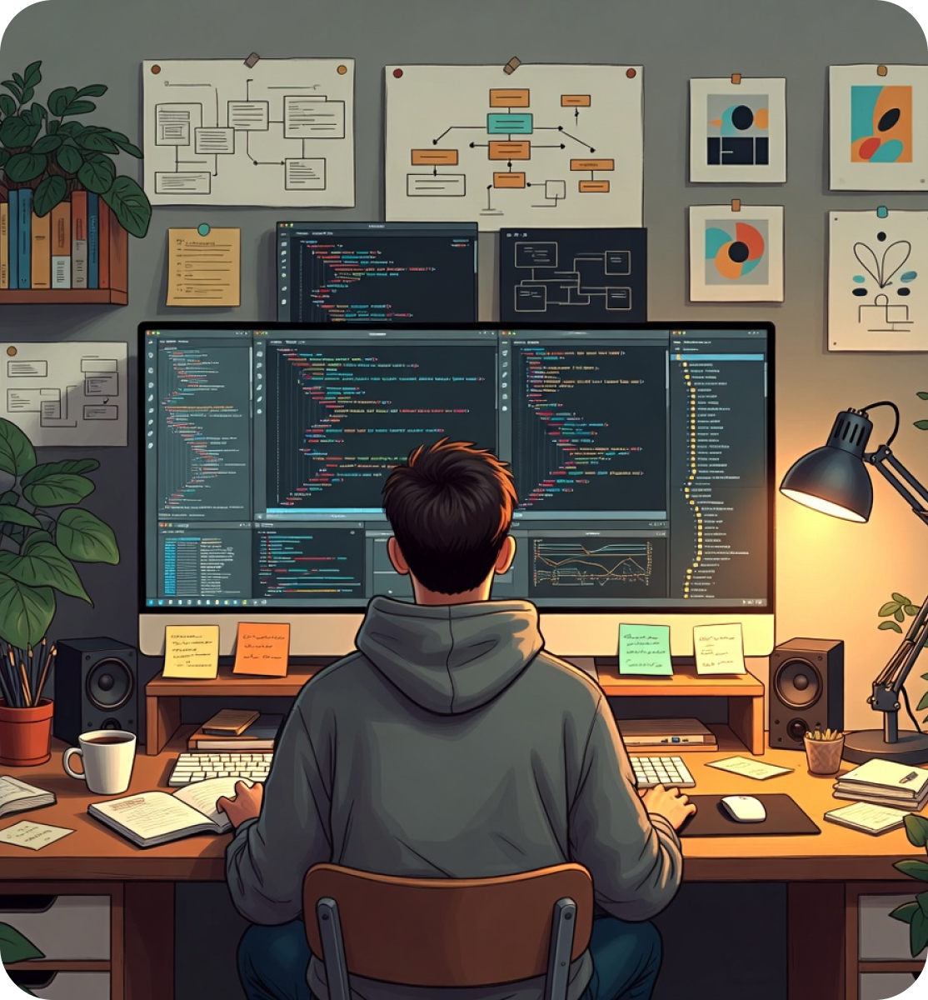
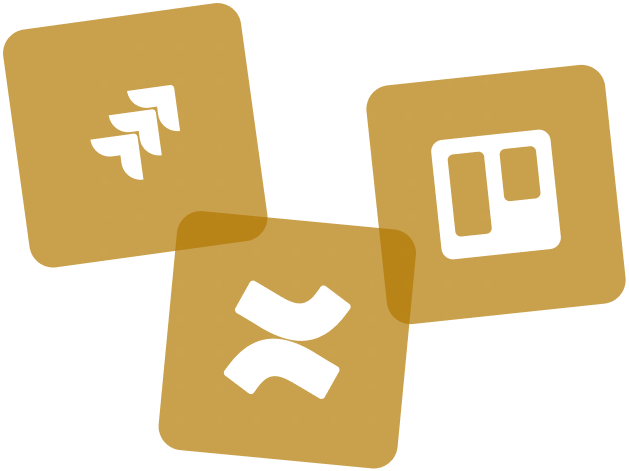

UX & UI Design Tools
Designing user-centered interfaces with structure, clarity, and scalable workflows
These tools support my UX architecture and product design process—from early exploration and wireframing to high-fidelity design, collaboration, and validation. I focus on choosing the right tool for the right stage, not the other way around.
 Figma
Figma- Adobe XD
- Sketch
- Balsamiq
- Axure RP
- Miro
- Google Stitch
- uxpilot


Visual & Graphic Design
Crafting strong visual identities and design assets that support clear user experiences
Visual design plays a key role in usability, branding, and communication. I use these tools to create consistent visual assets, marketing creatives, and interface graphics that align with product goals and brand identity.
- Adobe Photoshop
 Adobe Illustrator
Adobe Illustrator Affinity
Affinity- Adobe Express
- Canva
- Microsoft Designer
Frontend & Web Technologies
Bridging design and development with clean, maintainable, and scalable front-end code
A strong understanding of front-end technologies allows me to design with technical feasibility in mind, collaborate effectively with developers, and ensure that user experiences translate accurately from design to production.
- HTML
- CSS
 LESS
LESS- SASS
- Tailwind CSS
- Bootstrap
 Node.JS
Node.JS- JavaScript
- Git

Frontend & Web Technologies
Supporting clear documentation, planning, and communication across projects
Strong documentation and presentation skills are essential for effective collaboration. These tools help me communicate ideas clearly, manage information, and support stakeholders throughout the design and delivery process.

